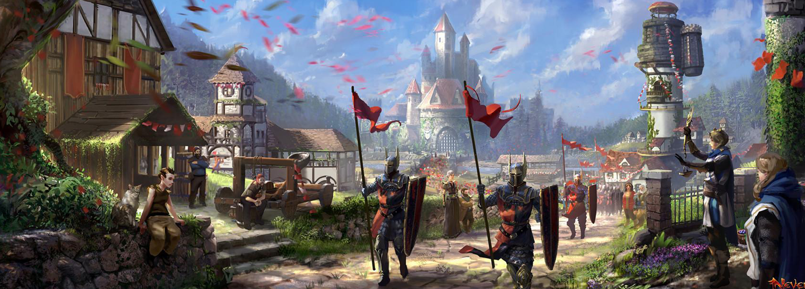
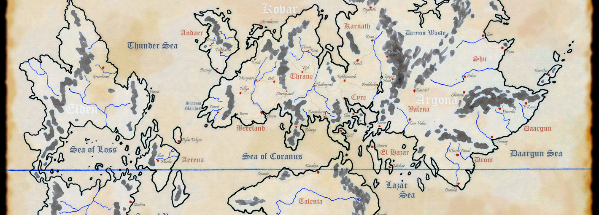
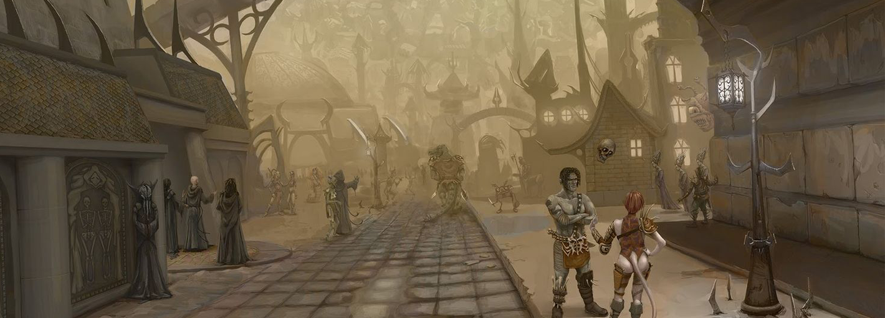
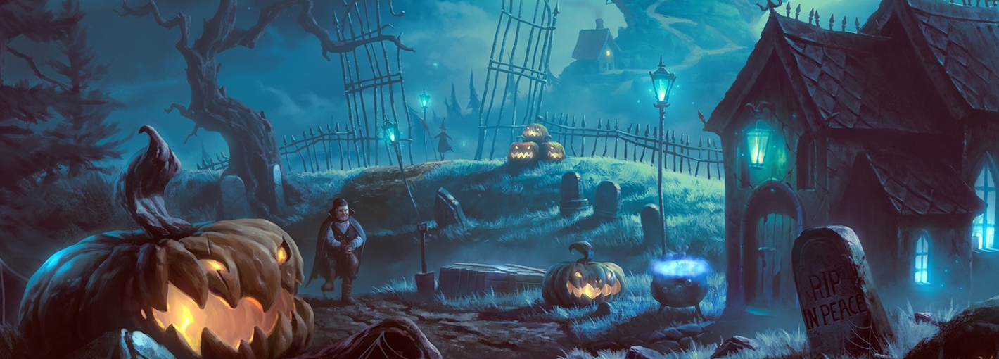
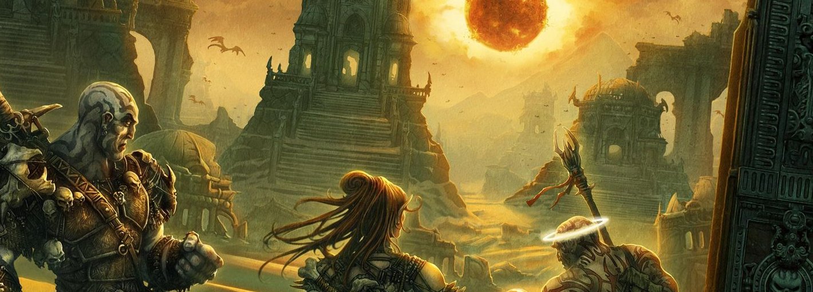

Сеттинг — это, если говорить простым языком, мир, в котором происходит действие того или иного художественного произведения или настольной ролевой игры. И Dungeons & Dragons, как самая популярная ролевая игра в мире, может похвастаться множеством сеттингов, некоторые из которых настолько обширны, что ознакомиться с ними полностью не выйдет и за несколько месяцев. Но мы постараемся хотя бы вкратце рассказать, какие бывают сеттинги D&D, какая между ними разница и с чего стоит начинать, если вы решили впервые попробовать настольные ролевые игры. Так как настольная ролевая игра Dungeons & Dragons существует уже практически 50 лет, за это время для неё были написаны тысячи приключений, и более того — на основе этой НРИ были созданы сотни различных художественных произведений. Это и книги, и фильмы, и видеоигры. И каждый новый продукт так или иначе расширял один из существующих сеттингов или же создавал новые.
|  |
Cейчас «Забытые королевства» — это самый главный и основной сеттинг Dungeons & Dragons, по которому существует больше всего информации. Он же рассматривается в «Книге Игрока» и других базовых материалах игры. И вы, скорее всего, могли о нём слышать. Именно в сеттинге «Забытых королевств» проходят события таких компьютерных игр, как “Neverwinter Nights” и “Baldur’s Gate”. Этот сеттинг также стал основой для главной космологической модели основной Мультивселенной Dungeons & Dragons — Великого Колеса, которое объединяет собой самые разнообразные миры и обеспечивает возможность взаимодействия и развития персонажей не только в одном из сеттингов.
Забытые Королевства представляют собой классический мир героического фентези эпохи Средневековья. Здесь живут представители множества рас, и многими из них вы можете сразу начать игру — как обычным (или совсем необычным) человеком, так эльфом, дварфом, или, например, драконорожденным, которые выглядят в D&D как прямоходящие рептилии.
Основное действие большинства приключений в мире Забытых Королевств проходит на континенте Фаэрун. Сейчас имеются настолько детальные карты Фаэруна, что вам вовсе не придётся придумывать что-то новое: сотни деревень, десятки крупных городов и мегаполисов, в каждом из которых есть множество интересных и уже описанных авторами мест для посещения, важных персонажей и возможностей заняться чем угодно, что только может потребоваться приключенцам.
|  |
Это второй из поддерживаемых сейчас правообладаетелями сеттингов для D&D 5. Здесь есть все те же знакомые расы, всё та же знакомая магия, только мир больше напоминает эпоху Ренессанса, а не Средневековья. И этот мир куда более «серый» в моральных вопросах. Многие «злые» в мире Забытых Королевств существа здесь оказываются простыми горожанами, а на первый взгляд «добрые» организации и объединения — хранят немало скелетов в шкафу.
Этот мир чудесное сочетание магии и технологии. Причем, с одной стороны, доступ к небольшим проявлениям магии здесь намного проще, чем в Забытых Королевствах, но, с другой, — слишком сильные заклинания, такие как воскрешение мертвых, встречаются намного реже и очень строго контролируются.
Эберрон подойдет не для приключений в стиле героического фентези, где персонажи храбро очищают подземелья, выполняют задания королей или захватывают их престолы, а для более приземленного, но при этом глубокого и драматичного погружения в мир. Здесь не так легко отличить добро от зла, хорошие поступки от плохих, и над действиями может потребоваться хорошенько задуматься.
Эберроне есть и новые игромеханические нововведения: так, учитывая высокий в сравнении с магическим средневековьем уровень развития, здесь присутствуют воздушные корабли, волшебные молниевые поезда и разумные механизмы. И поэтому главной визитной карточкой Эберрона во всех официальных редакциях D&D является класс Изобретателя — мага, который умеет создавать особые, наделенные сверхъестественной силой предметы.
С точки зрения космологии, Эберрон не находится в единой Мультивселенной с Забытыми Королевствами, а имеет собственные планы, верования и принципы мироздания.
|  |
Известный многим любителями видеоигр по игре Planescape: Torment, этот сеттинг послужил во многом основой для создания самого Великого Колеса и существующих в нём разнообразных планов, между которыми и предлагается путешествовать игровым персонажам. Причудливые миры, заставляющие напрячь воображение, такие как город Сигилл, философские вопросы и постоянное ощущение неизведанного, странного и чего-то нового, приправленное атмосферой стимпанка и викторианской эпохи — вот что ждёт тех, кто решит попробовать использовать этот сеттинг для своих игр.
Несмотря на то, что поддержка сеттинга прекратилась в 1996 году, до сих пор существует много энтузиастов, которые давно адаптировали его под реалии D&D 5 и продолжают развивать коллективными усилиями фанатов. Кроме этого, многие принципы Planescape легли в основу космологии и мироздания пятой редакции Dungeons & Dragons.
|  |
Это самый яркий (ха-ха!) представитель тёмного фэнтези в линейке Dungeons & Dragons. Представьте себе, что ваш мир — это небольшая страна или область, окруженная мрачными туманами. И правит ей заключенное здесь за свои грехи в прошлой жизни существо, владыка Домена. Здесь тусклый день сменяется страшной ночью, здесь ощущение страха и безысходности постоянно, а радость — безвкусна и мимолётна.
В каком-то смысле, Рейвенлофт является своеобразной преисподней или чистилищем по отношению к Забытым Королевствам и другим сеттингам, откуда в этот мир попадают некоторые важные персонажи. Если вы любите мрачную и готическую атмосферу — обязательно познакомьтесь с миром Ravenloft и проведите в нём не один десяток игр.
|  |
Атас – знойный, жестокий мир, где температура после полудня нередко достигает 50-60 градусов. Путника здесь ожидают песчаные бури, в течение которых день обращается в ночь; безжалостное солнце, вечно багровое, тонущее в тучах пыли; ветер, обжигающий, как дыхание раскалённой печи; серые, извивающиеся колонны пустынных смерчей… и жажда.
Влаги Атас практически лишён. Дождь проливается над пустыней раз в год, а кое-где и раз в десять лет. Ручьи звенят в предгорьях, но через два дня пути вглубь пустыни исчезают, бесследно растворяются в песках. Дальше тянутся лишь сухие русла некогда полноводных рек, кое-где пробегая под уцелевшими с древних времён каменными мостами. Оазисы с мутной водой из глубоких колодцев отделены друг от друга многими днями пути через бесплодное и безжизненное пространство.
Но пустыню нельзя назвать однообразной. Багровые каменистые пустоши, сюрреалистические нагромождения гранитных обломков то расчищаются бурями, то скрываются под волнами барханов высотой в сотни метров. Золотистые пески чередуются с чёрными пятнами вулканических полей и ослепительно белыми солончаками. Ближе к горам, именуемым Звенящими, раскинулись обширные равнины, поросшие кактусами и колючим кустарником, и причудливые лабиринты выветренных, рассыпающихся скал. На склонах гор можно встретить леса и озёра.